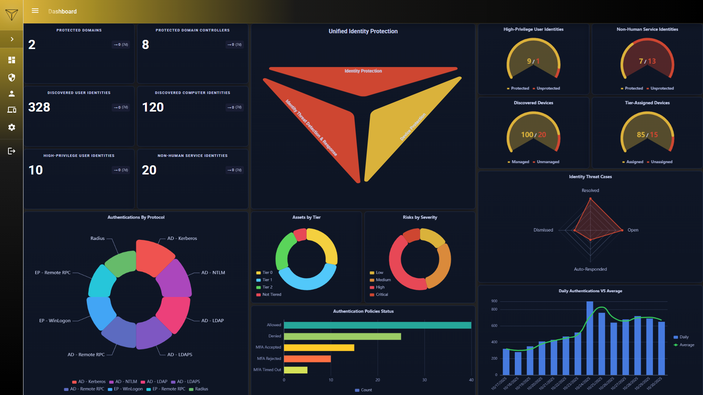
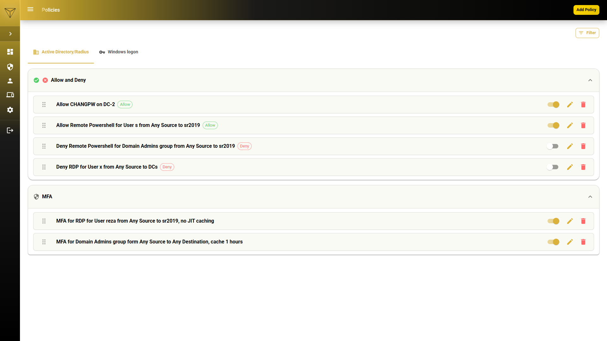
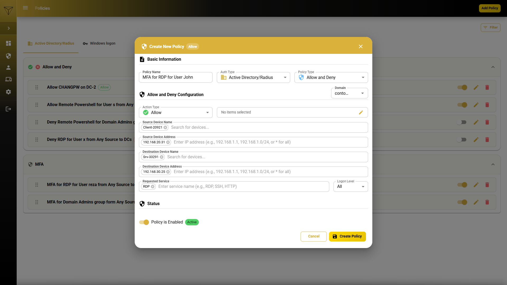
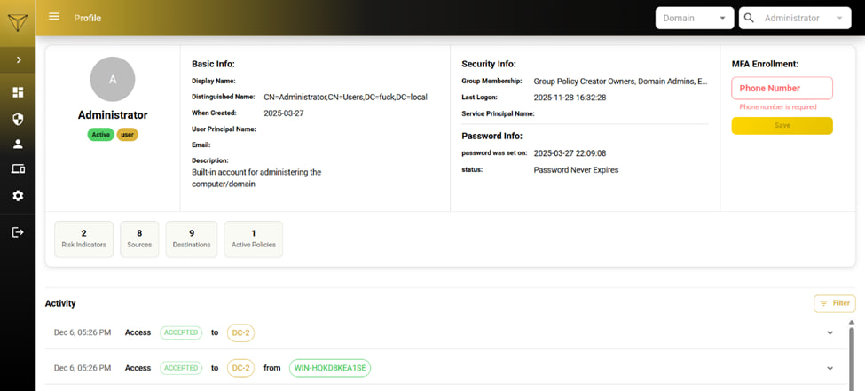
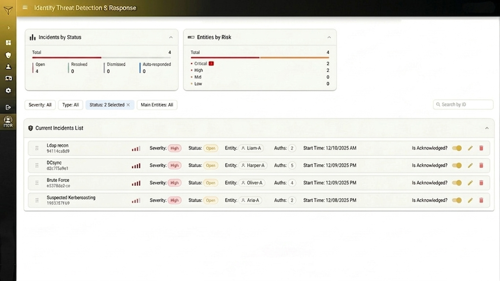

Stop Chasing Logs. Start Hardening Identity. Enforce real-time Zero Trust across your entire infrastructure. 👤🛡️
Connect with FounderCredentials are the gold mine for modern attackers. High-privilege accounts like Domain Admins and Service Accounts (Non-Human Identities - NHIs) are primary targets because they grant broad access without triggering traditional malware defenses. Traditional tools focus on file behaviors or log collection, often missing these legitimate but compromised identity flows.
UIP acts as an Identity-Based Firewall, sitting between your identities and resources to enforce Zero Trust in real-time. With Automated Incident Response, UIP can instantly quarantine affected users or systems, neutralizing credential-based attacks (Pass-the-Hash, Token Theft, Session Hijacking) at the source even if your passwords are leaked.
By stopping Lateral Movement and unauthorized privilege escalation before they happen, UIP severs the primary spread path for ransomware. When an attacker cannot pivot between systems, malware designed to encrypt or wipe files is pinned to a single machine, preventing catastrophic network-wide propagation.

Gain absolute visibility over your identity threat landscape. Monitor hardening status, detect identity-based threats, and secure your entire domain environment with a single click through our centralized dashboard.

Extend multi-factor authentication to every asset—even those that don't natively support it. UIP brings everything under a single MFA umbrella without costly migrations:

Define sophisticated access rules with ease. Implement Allow/Deny/MFA policies based on user groups, domains, or specific sources and destinations.
Enforce Just-in-Time (JIT) Administration to limit access windows and significantly shrink your organizational attack surface.

Get a dedicated lens into every account's behavior. Track authentication flows, monitor for privilege escalation attempts, and stop lateral movement in its tracks.
Security teams gain full visibility into in-network activities, allowing for immediate response to suspicious access patterns.

UIP combines risk-based policies with real-time response to neutralize threats as they evolve. By Using Identity Threat Scoring(ITS) system and enforcing continuous validation, we drastically shrink the Blast Radius of any infection.
Traditional security changes—such as policy updates, access segmentation, and network reconfigurations—are often time-consuming, complex, and prone to error. This friction disrupts both the user experience and administrative workflows. As a result, teams often resist critical security upgrades out of fear of downtime or service instability, leaving the organization trapped in an insecure status quo.
UIP is Agentless and Proxyless. Unlike traditional PAM or antivirus, you don't need to install software on every server or disrupt your network with "man-in-the-middle" proxies that create bandwidth bottlenecks.
It integrates seamlessly with your current IAM (on-prem or cloud), requiring Zero Configuration changes to your network architecture and ensuring Zero Downtime during deployment.
I am a Cyber Security R&D researcher and Purple Team Engineer with deep expertise in Microsoft Active Directory and defensive automation. My experience in identifying flaws in traditional security products led to the creation of UIP—a revolutionary approach to identity protection.
I am now looking to bring this technical leadership to the European or Australian tech ecosystems. I am seeking Skilled Worker Visa or Global Talent opportunities to help forward-thinking teams build resilient, identity-centric security postures.
Connect on LinkedIn & Watch Product Demos